Its Cartesian form is given by:
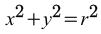where r is its radius.
Its parametric form is given by:
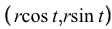where
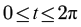Its tangent vector is:
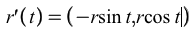and its norm is:
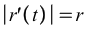Its unit tangent vector is therefore:
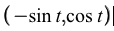Its arc length over the interval is 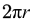.
The derivative of the unit tangent vector is:
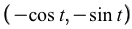Since the norm of the derivative of the unit tangent vector is 1, the unit normal vector is also .
The curvature of the circle is given by 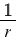
The area of a circle of radius r is 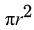.
This parametrization is not an arc length parametrization. Its arc-length function is given by:
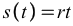Rearranging to make t the subject, we get:
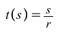Therefore, the arc-length parametrization is:
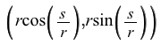